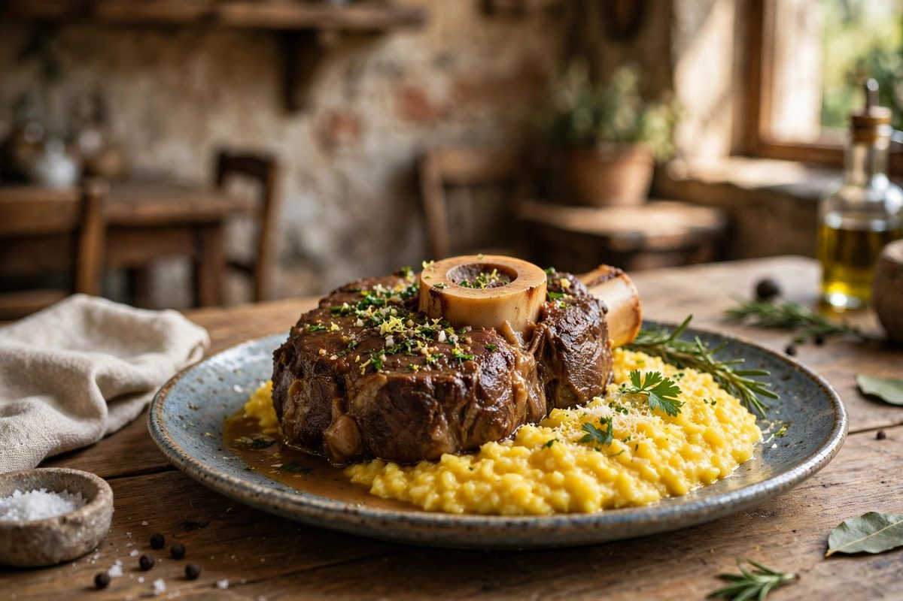

Home › Guides
Osso Buco: Milan's Slow-Braised Veal Shanks

Osso buco means hole in the bone, and that hole is the point. The dish is veal shanks braised slowly in white wine and stock until the meat falls from the bone and the marrow inside softens into something rich and silky. It is one of Milan's great dishes, and it is a perfect example of slow cooking turning a tough cut into something luxurious.
Choosing and preparing the shanks
Buy veal shanks cut about four centimetres thick, with the bone in the centre. Tie each shank with kitchen string around the middle so it holds its shape as it cooks. Season with salt and pepper, and dust lightly with flour, shaking off the excess.
The flour helps the meat brown and thickens the sauce slightly. Do not use too much, or the sauce turns pasty. Choose shanks that are similar in size so they cook evenly, and let them come to room temperature before browning.
Browning and braising
Brown the shanks in a heavy pot in olive oil and butter, until deeply golden on both sides, about four minutes a side. Do not crowd the pot; brown in batches if needed, because crowded meat steams instead of browning. Remove the shanks and soften onion, carrot, and celery in the same pot.
Add white wine and let it bubble for a minute, scraping up the browned bits from the bottom. Add stock, a tin of chopped tomatoes, and a bay leaf. Return the shanks, bring to a simmer, then cover and cook gently in the oven at 160 degrees Celsius for about two hours, until the meat is tender.
Gremolata
Gremolata is the fresh, sharp topping that makes osso buco. It is finely chopped parsley, lemon zest, and garlic, mixed together. It is added at the end, never cooked, because its job is to cut through the richness of the braise with fresh, bright flavour.
Sprinkle gremolata over each shank just before serving. Use unwaxed lemons and chop everything finely. Some cooks add a little anchovy to the gremolata, which adds depth without tasting fishy, but the classic version is just the three ingredients.
What to serve with osso buco
The classic partner is risotto alla Milanese, the saffron risotto of Milan. The creamy rice and the rich meat are a perfect match, and the saffron echoes the colour of the braise. Polenta is another good choice, as is mashed potato.
Serve one shank per person, with some of the sauce spooned over, and a spoon for the marrow. A simple green salad afterwards is enough. Osso buco is rich, so keep the rest of the meal simple and let the dish speak.
Osso buco variations
Osso buco is traditionally veal, but the method works with other meats. Pork shank and lamb shank both braise well, and they are cheaper than veal. The cooking time is similar, about two hours, and the result is the same: tender meat, rich sauce, and marrow in the bone.
Some cooks use red wine instead of white, which gives a deeper sauce, while others add a little tomato paste for richness. The gremolata stays the same whatever the meat, because its fresh, sharp flavour is what balances the dish. Serve any version with risotto or polenta, and a spoon for the marrow.
Frequently Asked Questions
What cut of meat is osso buco?
Veal shank, cut across the bone so the marrow is visible in the centre. The bone and marrow give the dish its richness.
How long does osso buco take to cook?
About two hours of slow braising at 160 C, until the meat is tender and nearly falling from the bone.
What is gremolata?
A fresh topping of chopped parsley, lemon zest and garlic, sprinkled over the shanks at serving to cut the richness.